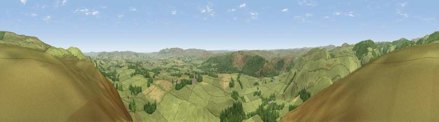

Viewpoint near Netherton
#2453 in England · top 11% of its area beats it · near NethertonThe view, rendered

A 360° render of this exact spot computed from the terrain model, tree cover and land cover — summer colours, afternoon light, calibrated against photographs of famous viewpoints. Real trees, hedges and buildings will differ in detail.
The panorama
Grey silhouette: terrain skyline in each direction (720 bearings, Earth curvature and refraction included). Dashed green: skyline with trees (+15 m) and buildings (+8 m) as obstacles. Blue strip: how far the ground is visible on each bearing.
Where the view opens
Wedge length = distance to the farthest visible ground on that bearing (vegetation-aware). Rings at 10, 25 and 50 km.
What fills the view
82% grassland · 14% woodland · 4% cropland
Angular shares of the visible panorama (visual magnitude), not map area. Landscape diversity 0.25 (0–1 Shannon).
Key numbers
More beautiful places nearby
The staircase of upgrades: each row has a higher view potential than everything closer. Driving times are estimates from straight-line distance, calibrated against real road routing — check an actual route before setting out.
| Place | Direction | Drive | Score |
|---|---|---|---|
| Viewpoint near Netherton | ENE · 2 km | ~5 min | 76.5 |
| Wether Cairn [Wholhope Hill] | N · 4 km | ~8 min | 80.7 |
| Viewpoint c12273_7856 | N · 6 km | ~12 min | 83.7 |
| Viewpoint c12396_7887 | N · 12 km | ~22 min | 85.7 |
| Viewpoint near Kirknewton | N · 21 km | ~36 min | 86.1 |
| Viewpoint near Chillingham | NE · 22 km | ~37 min | 88.1 |
| Long Side | SW · 105 km | ~130 min | 89.5 |
| Viewpoint near Easington | SE · 119 km | ~144 min | 90.2 |
55.36708, -2.10035 · source: screening · position refined by local search. Computed location — check access rights before visiting.